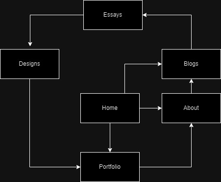
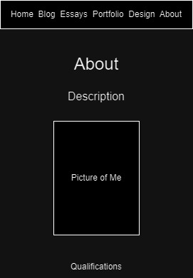

IxD Process
Goal Alignment:
I want a website capable of showing off my different skills, from programming to photography. I want this to be done through interative and intuitive design of a webpage,
as well as having my works on my portfolio page. This website will be something I can show to possible employers for any field that I would apply to.
Information Structure

User Flow

Style Process
Inspirations
I took inspiration from two websites, Keita Yamada gave me the idea to have a live video behind my main page, as a way to immediately my users grab attention
From Sean Halpin, I wanted to emulate their sticky menu bar, that followed with the page, yet remained elusive and minimalistic

References
Keita Yamada's Website
Sean Halpin's Website
Style Guide
Goal and Aesthetic
To create a minimalistic and enticing website to inspire users to be interested in my work and lead to opportunities.
Visual Design
Font and Font Colour
In terms of fonts, I have two in mind. For page headings, I want to use Silent Lips, its a very stylized font that is unique but readable for short texts and for the rest of my text I want to use Krylon, I think it blends minimilism with the style of Times New Roman.
I will utilise white for my text, as it is readable against the black background. If the white contrasts too much, I might settle for an off-white grey. For my hyperlinks I am going to use gold, specifically #b8860b, as it works well on the black background, due to not being hard to read but also striking enough to catch the eye.
Colour Scheme
The main colour scheme of my website is going to be black and white. I want the websites overall design to be minimalistic and very contrasted. The idea is to use this to point towards different parts of the page, especially things like my games, videos and pictures.
The vibrant colours will contrast greatly against the background.
Alignment and Composition
The whole website will be centered, with a focus on symmetrical balance. Most pages will be split straight down the center to achieve this, but some aspects will have symmetry across the diagonals, while still centered. The idea behind this is to complement the photos and short films.
Blocks of either two or four pictures will be in the portfolio, the pictures will also be placed such that they will balance out the symmetry.
Final Wireframes
Home Page
Blog Page
Portfolio Page
Sub-Portfolio Page
Design Page
About Page

Implementation Notes
UI and UX and code
Much of the code was implemented before the UI and UX, but those were kept in mind when working on the code.
A major focus was on readability and attention, the latter of which was important to focus on in the code,
with how the portfolio elements react to the users mouse, and to the reflecting which page the user was on, on the index bar.
Folder Structure
The folder structure was design to almost entirely reflect the structure of content within the website. With the sole exception of the blog and essay sections,
the sub sections of the pages of the website are within sub folders. The different types of files are also split. Javascript and CSS are placed in their own dedicated folders,\
and images are stored in subfolders. With the current design, the website is easily scalable, with both the coding design of the portfolio pages,
but also the design of the linear blog posts.